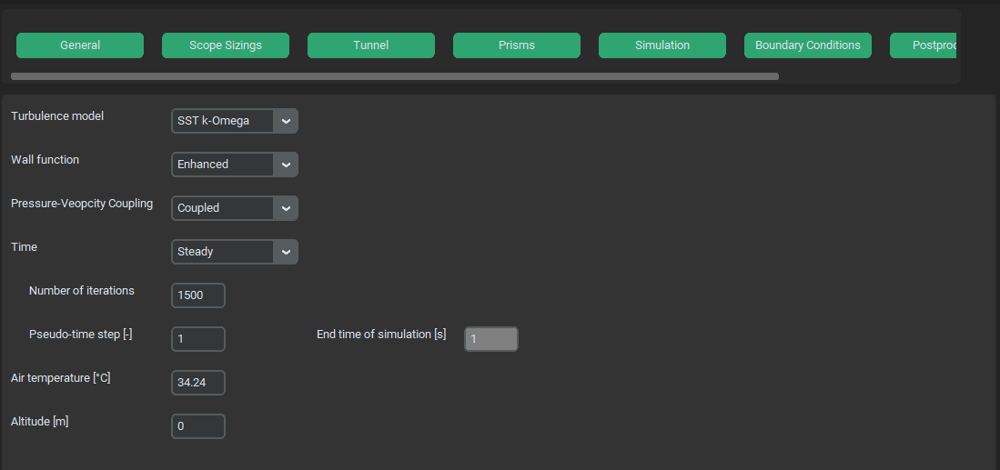

Simulation Options Menu#
Simulation options menu sets up simulation models, basic solver settings and iterations setup.
{kind=link}
Turbulence model#
type: switch - string
Type of turbulence model used. Aviable SST k-Omega and k-Epsilon.
Wall function#
type: switch - string
Type of wall function used when k-Epsilon is chosen. Aviable Enhanced, Standard and Non equilibrium
Pressure-Velocity coupling#
type: switch - string
Type of Pressure-Velocity coupling algorithm. Aviable Coupled and SIMPLE. Coupled algorithm takes up more RAM (roughly twice as much as SIMPLE), takes more time per single iteration but tends to be more stable and converges quicker. SIMPLE algorithm is recomended mainly when RAM issues are present.
Time#
type: switch - string
Choice between sationary or transient simulation. Aviable Steady and Transient. These settings also change the function of subsequent options.
Number of iterations#
type: text win. - integer
Number of iterations done for steady simulation.
Pseudo time step#
type: text win. - float
A pseudo time step value used for Pseudo Time Method Under-Relaxation method. Higher values could speed up simulation but also make less stable. Default value is 1. For more info see Pseudo Time Method Under-Relaxation
Iterations per time step#
type: text win. - integer
Number of iterations performed per single time step during transient simulation.
Time step size [s]#
type: text win. - float
Size of a single time step during a transient simulation.
End time of simulation [s]#
type: text win. - integer
Final time for transient simulation.
Air temperature [°C]#
type: text win. - float
Atmosferic temperature used for air density and viscosity calculations according to International Standard Atmosfere (ISA).
Altitude [m]#
type: text win. - integer
Altitude used for air density and viscosity calculations according to International Standard Atmosfere (ISA).